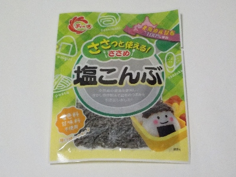

島乃香ささっと使える！ささめ塩こんぶ
2024/05/30

塩味がしっかり効いてるので、そのまま食べても美味しいです。
混ぜ込みワカメ風にご飯に混ぜてオニギリにしたら、茶色いヒョロヒョロした昆布が見えてて見た目がいまいちでした。昆布はオニギリの中にまとめて入れたほうがいいですね。
香川県小豆郡小豆島町馬木甲182
2024/05/30

塩味がしっかり効いてるので、そのまま食べても美味しいです。
混ぜ込みワカメ風にご飯に混ぜてオニギリにしたら、茶色いヒョロヒョロした昆布が見えてて見た目がいまいちでした。昆布はオニギリの中にまとめて入れたほうがいいですね。